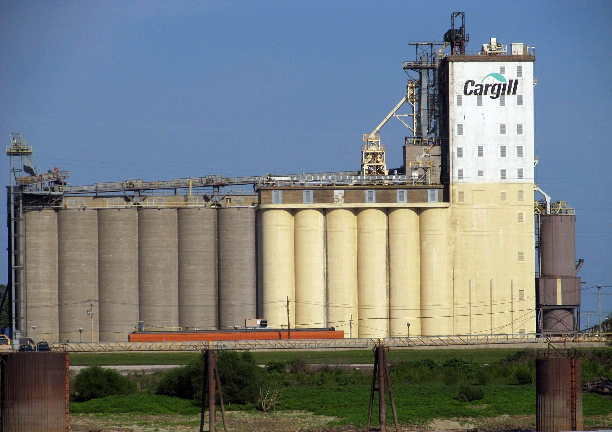

Будагроплюс
Високий професіоналізм і досвід дозволяють нам якісно виконати замовлення, починаючи з технічного обґрунтуванн'я будівництва об'єкта, закінчуючи навчанням обслуговуючого персоналу.
Звертаючись до нашої фірми «Будагроплюс» Ви отримаєте повний спектр послуг від геологічної розвідки та проектування до монтажу та вводу в експлуатацію обладнання будь-якого із вподобаного вами виробників зернопереробного обладнання.
Цінова політика компанії та професіоналізм наших фахівців дають можливість замовнику максимально ефективно витрачати кошти на розвиток свого підприємства.

246
ВИКОНАНИХ
ПРОЕКТІВ
ПРОЕКТІВ
50
ВИРОБНИКІВ
ОБЛАДНАННЯ
ОБЛАДНАННЯ
23
РОКИ НА РИНКУ
БУДІВНИЦТВА
БУДІВНИЦТВА
до 3
РОКІВ ТЕХНІЧНА
ПІДТРИМКА ТА ГАРАНТІЯ
ПІДТРИМКА ТА ГАРАНТІЯ
Наші виконанні роботи